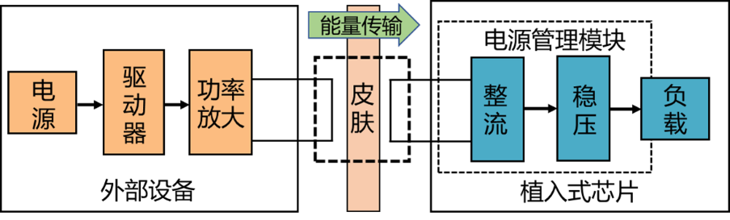
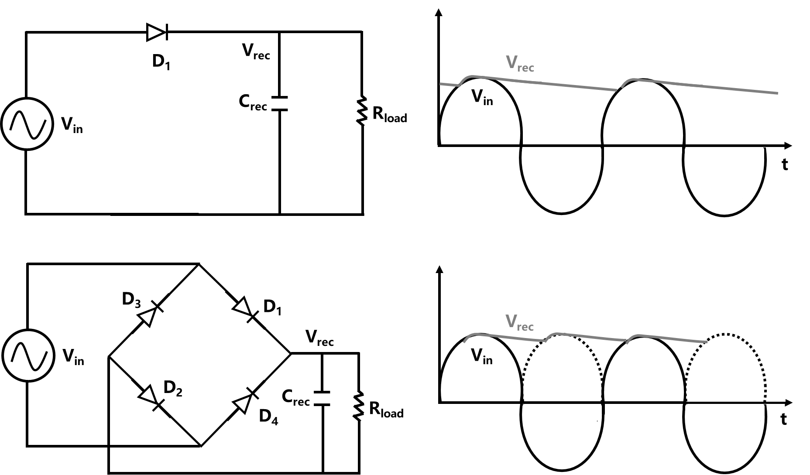
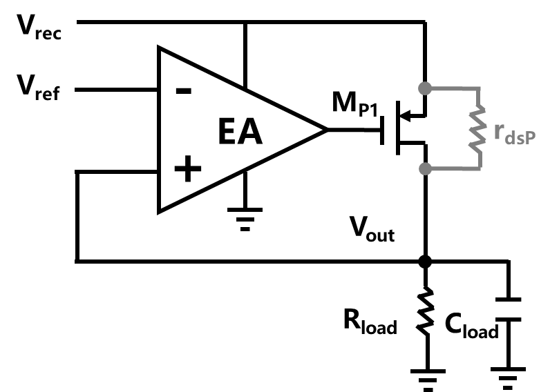
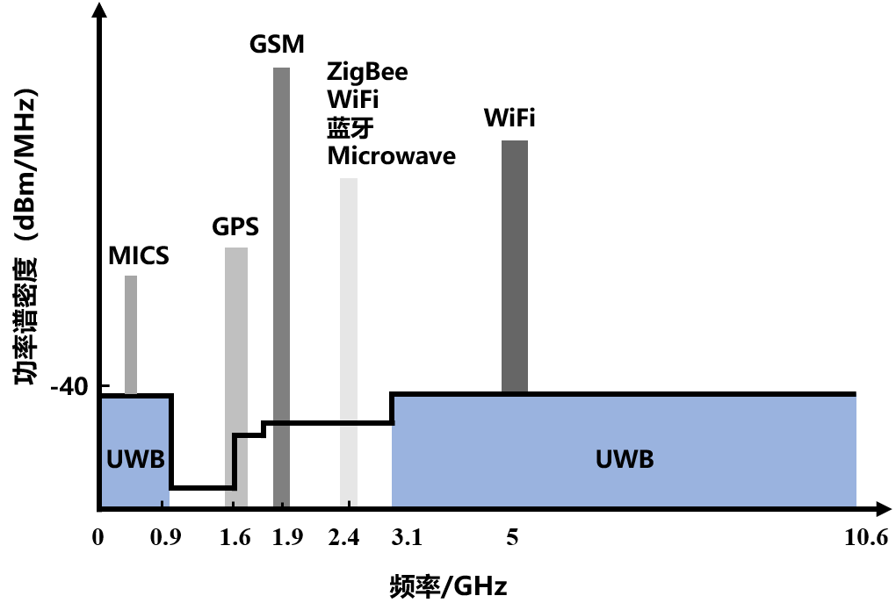
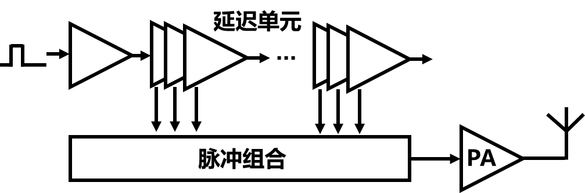

无线能量传输与通讯电路设计
无线能量传输和无线通信电路是植入式芯片中的两个关键电路。无线能量传输电路的主要功能是将能量从外部传输到植入式芯片，以实现芯片的供电或电池充电。通过无线电频率的电磁场耦合或电磁感应方式，外部的能量发射器或充电设备可以将能量传输到植入式芯片上的能量接收器。
常见的无线能量传输方式包括感性耦合、电磁波辐射、超声波和近红外光等[75]。在脑机接口芯片中，感性耦合是最常用的传输方式[76]。它利用线圈之间的电磁感应原理，通过磁场传输能量。其他方式如电磁波辐射、超声波和近红外光在脑机接口应用中也被使用[77]。图8-24给出了一个典型的无线能量传输电路结构。元件在功率放大器驱动下，将电能转换为时变的电磁场或超声波等，这些能量穿透人体组织后向侵入式的芯片传递。植入式芯片接收到的交流电载波信号经过片上电源管理模块整流和稳压调节处理后，再传递给负载。电源管理模块中的整流器用于将输入交流信号转换为未调节的直流信号，稳压电路进一步抑制电源纹波，以实现对负载的稳定供电。

图 8-24用于植入式芯片的无线能量传输电路框图
整流电路与稳压电路
图8-25（a）所示为最简单的半波镇流器，由二极管和滤波电容组成。当输入交流电压Vin处于正向阶段且Vin高于输出电压Vrec时，二极管D1导通。在另外半个周期，二极管反向偏置。图8-25（b）所示为植入式芯片中常见的全波桥式整流器，该电路由四个二极管组成一个桥式电路和滤波电容构成。在输入交流电压Vin的正向阶段且两端电压高于Vrec时，D1，D2开启。在交流电压Vin的另外半个周期且两端压差高于Vrec时，D3，D4开启。在全波整流器的每个周期中，Crec被充电两次，因此纹波较半波整流更小。同时由于在每个输入周期内，都能够利用两个二极管进行整流，有效地利用了输入信号的能量，效率更高。在整流电路中，除了使用二极管，还可以使用二极管连接的晶体管，但无论是二极管还是晶体管，它们都会受到正向偏置压降的影响。PN结二极管的压降约为0.7V，而MOS二极管连接压降等于阈值电压。因此，对全波整理电路，输出将降低两倍二极管压降或晶体管阈值电压。

图 8-25 半波整流与全波整流电路
图8-26（a）中展示了栅极交叉耦合的整流电路[78]。它由两个NMOS晶体管和两个PMOS晶体管组成，其中，NMOS晶体管的栅极连接到对向晶体管的漏极。每个周期内，其中一个NMOS 晶体管处于线性区域，其阈值效应可以忽略不计，从而将正向压降降低为单个阈值电压。采用8-26（b）所示的比较器控制的主动整流器可以进一步抑制晶体管在开-关转换期间的反向漏电流导通，从而进一步提到电路效率。
(a) (b)
图 8-26交叉耦合以及采用比较器的整流电路
稳压电路
整流电路的输出通常包含了大量纹波。尽管可以通过增大电容来有效降低波纹，但在植入芯片中，由于内外线圈之间的距离、错位等因素，导致内部线圈获得的交流电压本身就存在显著波动，因此需要进一步对输出电压进行稳压。植入式芯片中往往采用低压差稳压器（low dropout regulator, LDO），来减小功率损耗。LDO属于线性稳压器的一种，它利用一个高增益放大器来控制BJT或者MOSFET传输管的电阻，使得该电阻和负载电阻组成的电阻分压器始终保持所需比例，进而产生预期的输出电压，图8-27给出了典型的LDO电路结构，主要包含了误差放大器（EA）以及其控制的传输管Mp1。很显然，LDO的功率损耗和Vrec-Vout成线性关系，由于Vrec和Vout之差只在数百毫伏之间，因此LDO仍可以保证较高的转换效率。事实上，由于LDO结构相对简单，面积小且噪声较低，在大多数低功耗应用中，线性调节器都采用低压差（LDO）调节器。

图 8-27 低压差稳压器基本结构
低频无线数据传输
采用无线数据传输可以实现侵入式脑机接口芯片与其他设备之间的实时数据交换，同时避免有线传输造成的手术创伤和感染等问题，是当前脑机接口系统的发展趋势[79]。因此将数字信号传输到身体外部接收设备，是脑机接口芯片设计中一个非常重要的考虑因素。目前脑机接口芯片中所采用的无线通信技术主要分为窄带通信和超宽带通信两类[80]。图8-28为典型的窄带发射机电路结构框图，主要包含了基带信号处理电路、数模转换器、上变频器以及通信天线四个部分。基带信号信号在压缩、编码等处理后由模数转换器转换为低频模拟信号。上变频器将低频模拟信号与本地振荡器提供的高频载波进行混合后，生成射频调制信号。最后，射频信号通过天线辐射到空间中进行传输。
图 8-28 典型的窄带发射机电路结构

图 8-29 常用无线通信技术的频带分布
窄带通讯技术包括医疗领域专门制定的WMTS（Wireless Medical Telemetry Service）、MICS（Medical Implant Communication Service）和蓝牙、WiFi、ZigBee、近场通信等通用通讯标准。WMTS的频段通常在608-614 MHz、1395-1400 MHz和1427-1432 MHz，可用于患者心电图、血氧、血糖等生命体征的数据传输，具有稳定、可靠的特点，但是带宽一般较低。MICS是专门为医疗植入设备而设计，频段一般在402-405 MHz、413-419 MHz和426-432 MHz的通信方式，在植入式传感器、心脏起搏器、神经刺激器等植入式医疗设备中均有应用，其特点是低功耗和高可靠性，其带宽同样较低[81]。ISM（Industrial Scientific Medical）频段中的13.56MHz也常被用于侵入式芯片的近场数据通讯（near field communication），其特点是功率传输可一同在相同的载波频率上实现，但是数据传输率仍然有限[82, 83]。表8-4对上述通讯方式的数据率、传输距离和功耗等方式进行了总结，图8-29为频带分布图。
表8-4 常用于侵入式脑机接口的窄带通讯方式比较
| 窄带通讯技术 | 频段 | 通讯范围 | 数据率 | 功耗 |
|---|---|---|---|---|
| WMTS | 608-614 MHz, 1395-1400 MHz, 1427-1432 MHz | < 10 m | <2 Mbps | 中：几十mW-1W |
| MICS | 402-405 MHz, 413-419 MHz, 426-432 MHz | < 1m | <2 Mbps | 较低：几mW到数百mW |
| NFC | 13.56 MHz, | < 10 cm | < 10 Mbps | 极低：几毫瓦到几十mW |
| Bluetooth | 2.4 GHz | < 10 m | < 10 Mbps | 低：几mW到几十mW |
| WiFi | 0.9 GHz, 2.4 GHz, 5 GHz | < 100 m | 10Mbps – 1Gbps | 高：几百mW到数W |
| ZigBee | 2.4 GHz | < 100 m | <250 kbps | 较低：几十mW到数百mW |
随着侵入式脑机接口系统不断向着高通量方向发展，脑机接口芯片需要在极低的功耗下提供更高的数据带宽。与上述窄带技术不同，带宽是载波频率的0.2倍或者绝对带宽大于500MHz 的信号定义为超宽带（ultra-wideband, UWB）信号[84]，其中0~960 MHz和3.1~10.6 GHz两个频段可用于超宽带通信且要求信号辐射功率谱密度小于-41.3dBm/MHz（图8-29）。超宽带信道容量大，能够实现高通量数据的无线传输，且其固有的低功率辐射要求缓解了功率放大器功耗较高的问题，在最新的脑机接口芯片中得到了广泛应用[85-87]。从超宽带的频谱要求出发，一般在时域中使用的主要是高斯包络、三角包络、半余弦和矩形四种波形，可采用不同的电路设计方法产生上述波形。图8-30分别展示了侵入式脑机接口芯片中采用的典型UWB电路结构，可分为无载波和有载波型[88-90]。图8-30（a）中的无载波UWB发射器在利用多个延迟单元和组合逻辑产生高阶高斯脉冲波形，最后通过功率放大器驱动天线。该电路结构简单，主要以数字电路为主，不需要混频器和本地振荡器，功率损耗较低，但是多路精准的亚纳秒级数字延迟单元在电路与版图上实现较为困难，容易受到噪声和失配的影响。图8-30（b）中所示的基于载波的结构，包括一个脉冲发生器、压控振荡器、一个脉冲整形器以及功率放大器。该电路首先根据数字信号产生窄脉冲控制信号，该控制信号随后触发压控振荡器产生多周期的脉冲包络信号，最后经过脉冲整形之后输出满足要求的信号。由于其工作于触发状态，功耗较低，但是需要振荡器能够快速开启和关闭以避免额外频率的引入。

(a)
(b)
图 8-30 无载波与有载波UWB电路结构